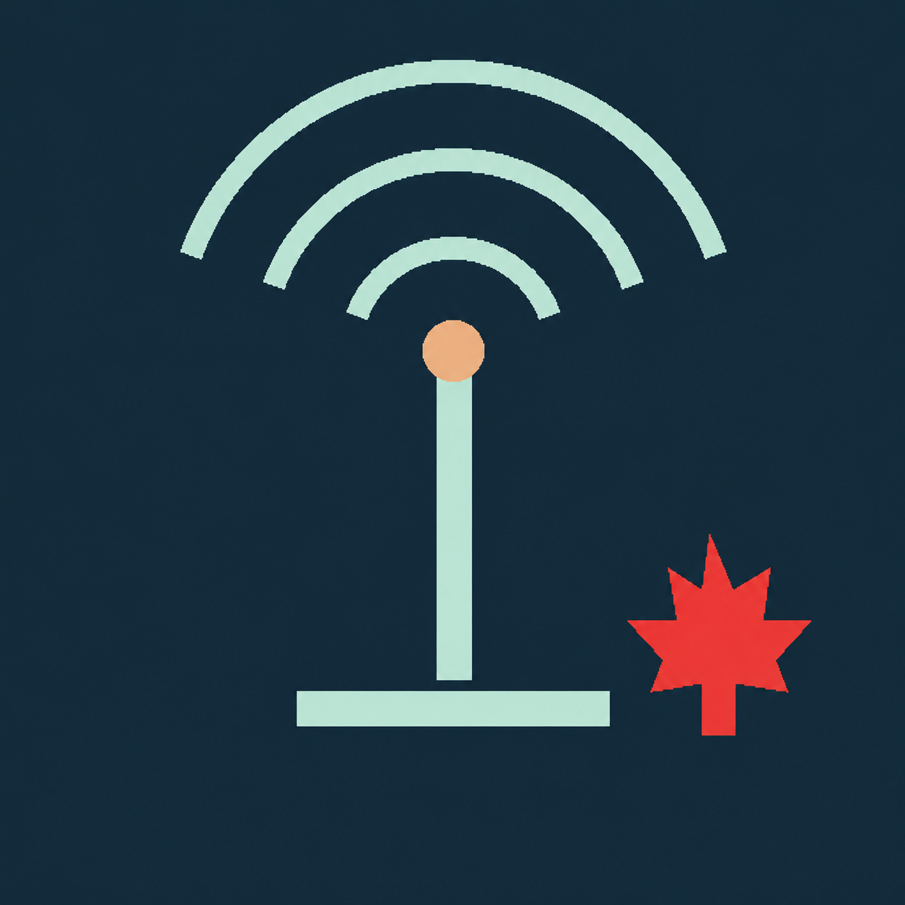

CANADIAN AMATURE RADIO
STUDY GUIDE AND REFERENCE
Aa
Glossary
Opening your radio workbook…
⌂
Home
▤
Learn
⌁
Labs
✓
Tests
▥
Scores
✎
Notes
Glossary & definitions
Close ×
Find a word or acronym
Close to return to the same lesson, question, lab or note.